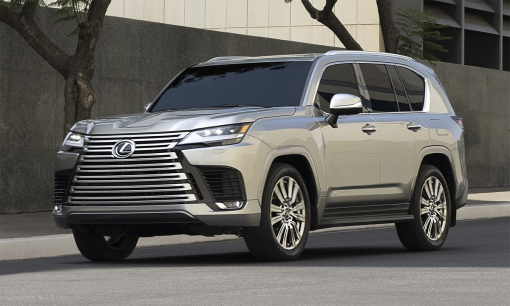
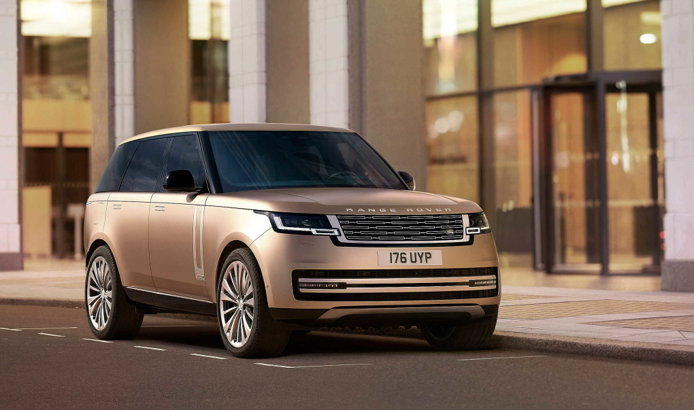

Mercesdes S-class mới, Audi e-tron, Range Rover hay Lexus LX 600 là những cái tên sẽ xuất hiện trong 2022.
Sau 2021 trầm lắng, các hãng xe tại Việt Nam đang trông đợi 2022 thị trường sẽ tươi sáng và sôi động hơn. Hiện thực hóa mong muốn đó là kế hoạch đưa các mẫu xe mới về nước, trong đó có các mẫu xe sang.
Hãng xe Đức có kế hoạch sẽ thêm một xe thuộc phiên bản mới tại Việt Nam thuộc giải sản phẩm mới sau E-class và S-class là C-class, và một phiên bản cao cấp của GLS là GLS Maybach.
GLS Maybach có thể về Việt Nam, trong quý I hoặc II của năm nay, đối với C-class có thể muộn hơn.
Thiết kế mới của Mercedes vẫn theo hướng unisex phù hợp cho cả nam và nữ. Hiện tại, ở Việt Nam Mercedes đang cung cấp 3 sản phẩm theo thiết kế mới là E-class, GLE, GLS. Ngoài ra, trong năm 2022 hãng có thể giới thiệu thêm mẫu xe điện EQS.
Tương tự hãng xe đồng hương, BMW cũng sẽ đưa về hai sản phẩm mới về Việt Nam là mẫu series 4 Grand Coupe và series 8 Grand Coupe. Trong khi series 4 đã có bản mui trần ở Việt Nam giá hơn 3 tỷ đồng thì series 8 là lần đầu tiên về Việt Nam.
Ở các phiên bản thể thao đầu chẵn như 2, 4, 6, 8, BMW sẽ cung cấp ba tùy chọn Grand Coupe, Coupe và Convertible. Trong khi đó các bản đầu lẻ như 3, 5, 7 sẽ chỉ có sedan hoặc wagon. Ở Việt Nam chỉ có các phiên bản phổ thông của từng dòng như đầu lẻ có sedan, đầu chẵn có convertible.
Mức giá của mẫu xe này dự kiến khoảng 7-8 tỷ đồng, cao hơn giá của X7 tại Việt Nam. Series 8 cũng là mẫu sedan hiệu suất cao đầu bảng của BMW thay thế cho series 6. Theo đại lý, ngoài đưa về một vài mẫu xe mới, nhiều khả năng BMW Việt Nam chuyển từ nhập khẩu sang lắp ráp một số dòng xe như series 3, series 5 hay X3.
Ra mắt phiên bản mới trên thị trường thế giới vào tháng 10/2021, Lexus chính thức nhận đặt hàng vào tháng 12/2021. Thời gian giao xe dự kiến trong năm 2022, vì thế LX 600 có thể sẽ được ra mắt trong năm nay tại thị trường Việt.
LX 600 chưa có thông tin cụ thể về trang bị, tuy nhiên sẽ có 3 tùy chọn thay vì một như trước đây, đó là phiên bản 7 chỗ, 7 chỗ Super Sport và bản 4 chỗ với mức giá giao động từ 7,9 đến 8,9 tỷ đồng.
Điểm đáng chú ý nhất của Lexus 600 mới so với thế hệ tiền nhiệm ngoài thiết kế mới, xe còn sử dụng động cơ và khung gầm mới, giống như thay đổi trên Land Cruiser thế hệ mới.
Nếu như về đủ cả 3 phiên bản, Lexus chính hãng đang quyết tâm đánh bại các salon tư nhân trong việc chen chân bán Lexus. Hiện tại, các salon tư nhân vẫn đang nhập Lexus không chính hãng từ Trung Đông và Mỹ với mức giá chênh gần 1 tỷ đồng nhưng chủ yếu là bản Super Sport Trung Đông và MBS 4 ghế nhập Mỹ.
Ngoài ra, trong năm 2022, Lexus Việt Nam có thể đưa về cả mẫu LC 500 với giá khoảng 8 tỷ đồng. Mẫu coupe thể thao của Lexus từng được các showroom tư nhân nhập về với giá khoảng 10 tỷ đồng vào năm 2018.
Trước LC 500, Lexus Việt Nam cũng đã bán một mẫu xe coupe thể thao khác là RC 300 giá khoảng 3,3 tỷ đồng.
Tương tự Lexus, Land Rover cũng ra mắt mẫu xe SUV full-size thế hệ mới là Range Rover. Xe có thiết kế đơn giản hóa ở nhiều chi tiết từ nội đến ngoại thất cùng động cơ, khung gầm mới giúp tối ưu khả năng vận hành.
Cũng giống Lexus, Land Rover bị cạnh tranh gay gắt từ các salon nhập khẩu. Lợi thế của xe chính hãng là đa dạng phiên bản hơn, dễ đặt trang bị hơn nhưng Land Rover chính hãng có giá bán cao hơn khá nhiều so với xe nhập khẩu tư nhân.
Ví dụ: một chiếc Range Rover bản SV Autobiography có giá chính hãng khoảng 17-19 tỷ đồng, trong khi salon ngoài bán khoảng 12-13 tỷ đồng, trang bị tương đương. Mẫu Range Rover mới hiện tại có giá đặt xe chính hãng cho bản Autobiography khoảng 14-17 tỷ đồng và bản SV Autobiography giá có thể lên tới 25 tỷ đồng. Dự kiến xe sẽ về Việt Nam trong quý II.
Ngoài Land Rover, thương hiệu Jaguar thuộc tập cùng tập đoàn cũng có thể sẽ ra mắt mẫu xe điện đầu tiên của hãng tại Việt Nam là I pace. Mẫu xe này đã lăn bánh trên đường phố Hà Nội, do văn phòng đại sứ quán Anh sử dụng.
Audi Việt Nam cũng sẽ ra mắt mẫu thuần điện e-tron trong tháng tới. Tuy nhiên, đây chỉ là sự kiến giới thiệu mẫu xe này đến khách hàng, kế hoạch, giá bán hãng chưa có lịch cụ thể trong năm nay.
Volvo trong năm nay dự kiến không ra mắt thêm xe mới, nhưng sẽ đưa thêm các phiên bản hybrid của các mẫu xe đang có, tương tự XC60 hay XC90 hồi tháng 11/2021.
Porsche Việt Nam chưa có kế hoạch ra mắt xe mới trong năm 2022, tuy nhiên hãng hỗ trợ đặt hàng với những mẫu xe đã ra mắt trên thế giới, dù thời gian chờ khá lâu, thường 6-9 tháng hoặc hơn một năm tùy thuộc vào trang bị và mẫu xe khách hàng lựa chọn.
Ánh Dương Nguồn: https://vnexpress.net/nhung-mau-xe-sang-chao-thi-truong-viet-trong-2022-4413022.html